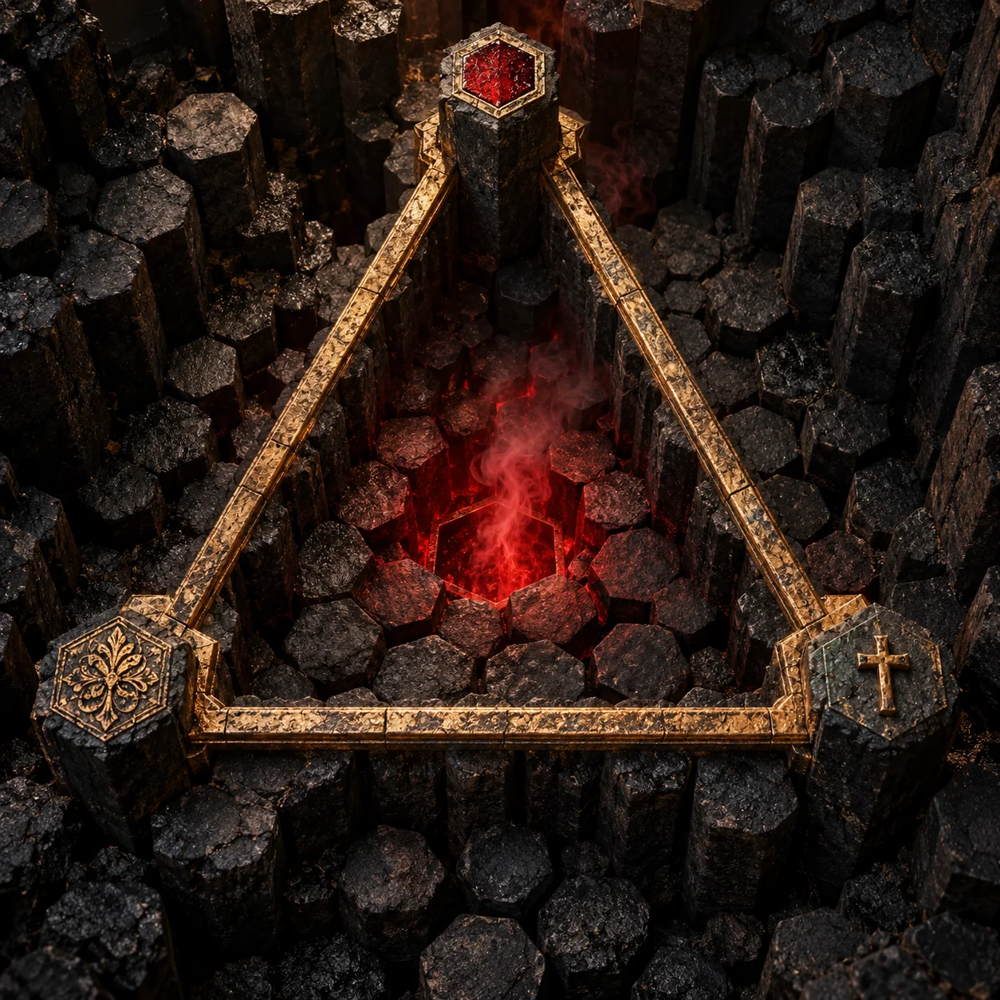
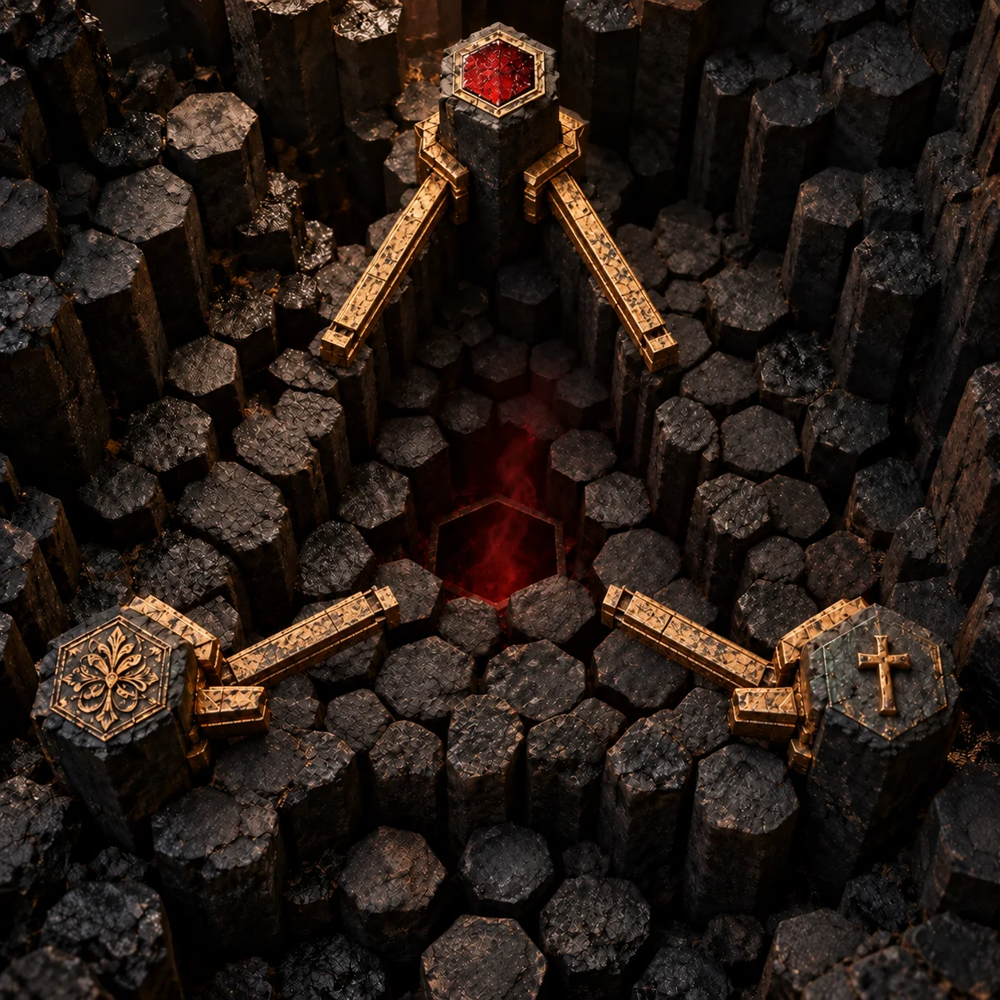
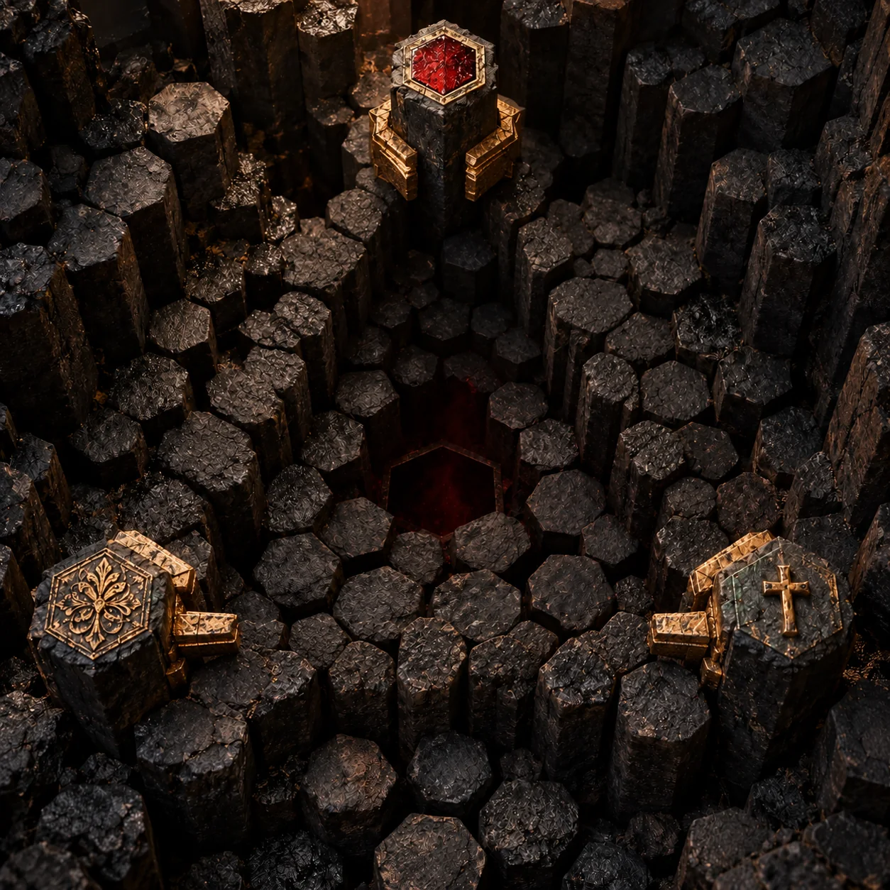

O diagrama ganha corpo.
Inspirado na estrutura triangular do Scutum Fidei medieval: três vértices movem-se até um centro. O hexágono é uma nova forma FER, não um símbolo antigo atribuído ao projeto.
PSIKOPAPA / FER · MOCKUPS DE DIREÇÃO VISUAL
Três forças reais entram em movimento, fecham um triângulo e só então revelam o centro. Estes estudos são para escolher a linguagem visual antes de alterar a página FER.



Os hexágonos vêm de colunas de basalto reais. As três peças ficam afastadas; braços de metal avançam pelas três arestas; o fecho do triângulo acende a abertura hexagonal no centro.
F / desejo · E / capacidade · R / direção
Inspirado na estrutura triangular do Scutum Fidei medieval: três vértices movem-se até um centro. O hexágono é uma nova forma FER, não um símbolo antigo atribuído ao projeto.

Arcos inspirados na triquetra de manuscritos medievais entram uns pelos outros. O movimento é de metal pesado e relevo; o vazio hexagonal só surge quando os três se encaixam.